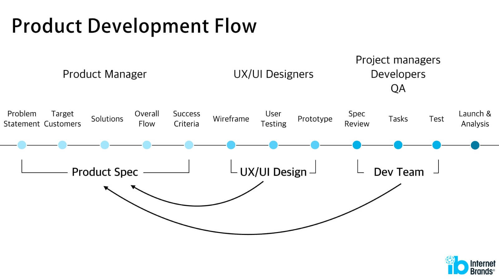
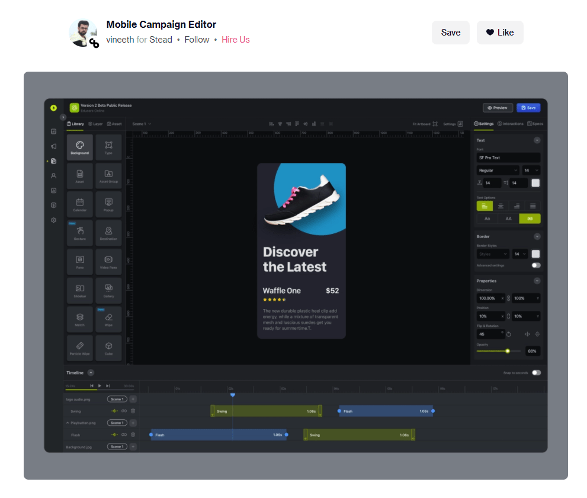
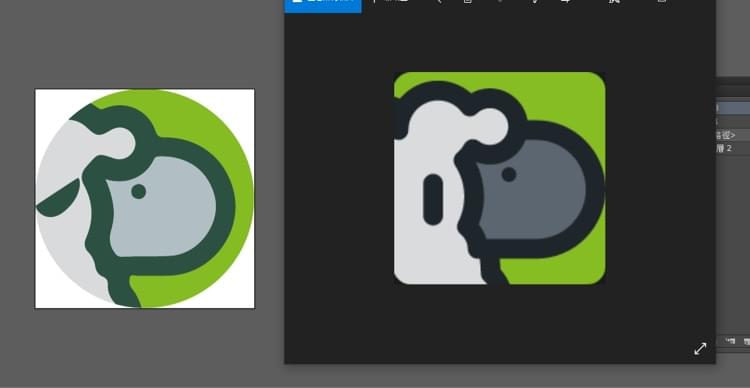
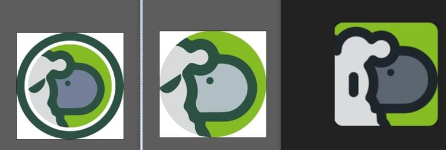
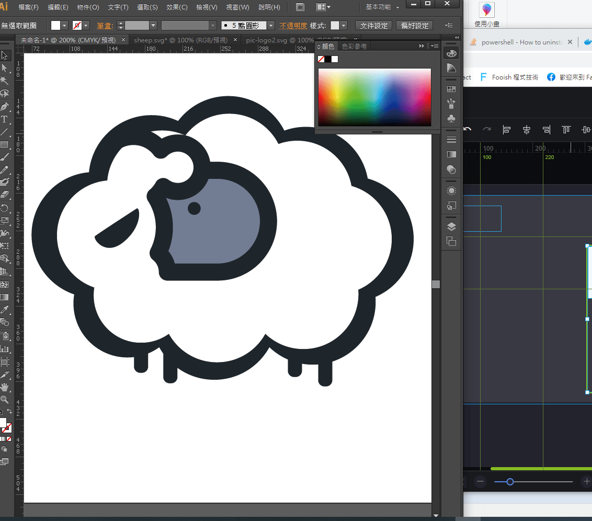
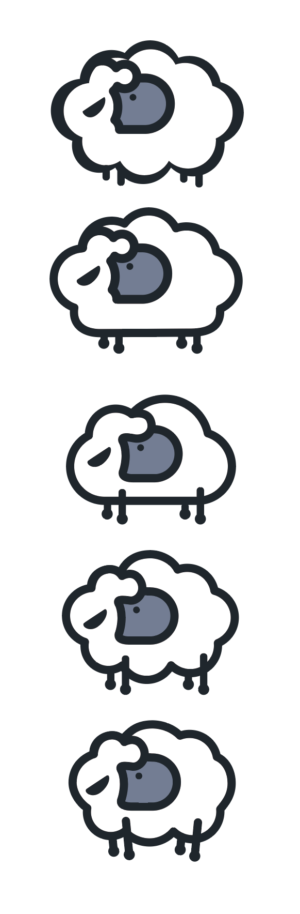
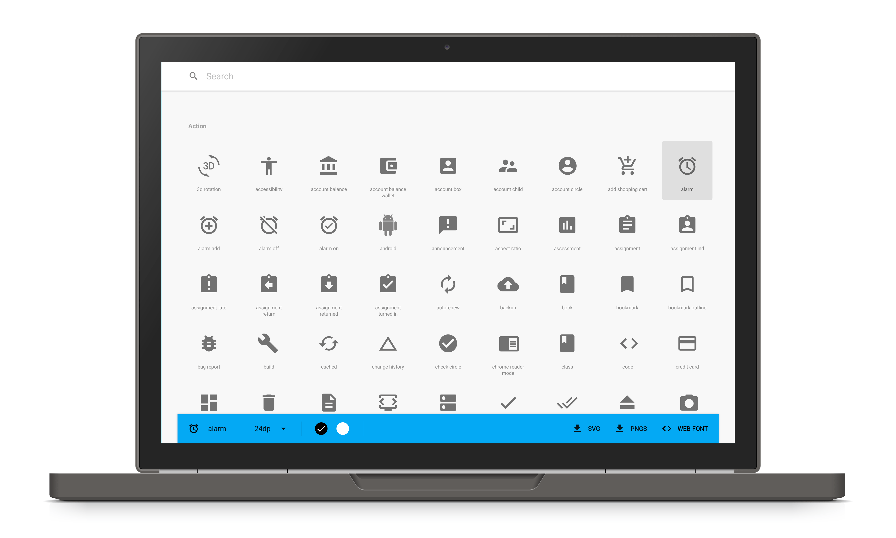

[作品筆記] sketch-builder 雲端原型工具開發筆記(03) - 開發的目標與介面設計
[03] sketch-builder 線上可視化編輯器開發筆記 - 開發的目標與介面設計
陸續更新:
sketch-builder 雲端原型工具:
https://mike-zheng.github.io/sketch-builder
開發流程
之前開發的side project主要都以先討論需求並請設計師協助設計為主。
在我認知的產品開發流程沒意外的話應該是:
就像軟體開發流程是什麼？PM與UX Designer的區別？

- 先去釐清使用者需要什麼，並理解相關的操作流程，
- 塑模並討論，請PM或是設計人員設計粗稿，用以討論整體UX與workflow
- 驗證可行性，並將發散的模型趨向可實作的方向。
- 設計師將討論結果設計UI，並一致化整體風格
- 複習spec，RD將討論的結果實作並實現
Interface 介面
這次的開發目標較為明確，主要是練技術為主，會從後期(5)實作開始。
設計部分預計參考dribbble 這位印度大師的作品

雖然此作品介面主要操作為影片的編輯器，但大部分功能或是版面類似於sketch規劃，
會從這個設計當作主要風格去延伸，並將sketch功能陸續實作。
logo設計
logo一直一來都是相對頭疼的部分，這次最一開始是將羊設定為logo的初始意象。
最初代的logo
經過幾次改版之後
 加入雲端概念重新設計
加強雲端羊的意象
最後把雨變成雲端羊的4隻腳
最終定案:
設計logo部分至少花了我整整一星期下班後的開發時間，但由於logo是專案的識別靈魂，且多次麻煩友人設計師協助調整設計。
請大家一定要好好訂閱 @errzi_oyster
Icons
icon 使用google material design icons

這套icon已經是非常經典的項目了，想必曾經經歷angularJS時代的開發者們，這款肯定比fontawesome更上手。
其他靜態資源
scada svg
https://www.hmicons.com/product/free-pack/
補充的 svg
https://www.flaticon.com/authors/special/lineal-color
https://www.flaticon.com/packs/industry-72
https://www.flaticon.com/packs/machinery-28
Not support mobile
https://www.flaticon.com/free-icon/rejected_4337015?related_id=4337015&origin=pack
Asset icon 生成
vue-pwa-asset-generator npm package
非常方便的靜態icon生成器
使用指令生成各大小合適的icon
npx vue-pwa-asset-generator -a ./design/logo.png -o ./public/img/icons
下一篇就會開始往開發邁進
陸續更新:
sketch-builder 雲端原型工具:
https://mike-zheng.github.io/sketch-builder
雲端原型工具開發筆記系列文